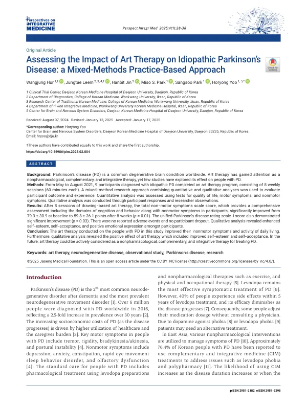

Assessing the Impact of Art Therapy on Idiopathic Parkinson’s Disease: a Mixed-Methods Practice-Based Approach
Hur W, Leem J, Jin H, Park MS, Park S, Yoo H
Perspectives on Integrative Medicine 4(1):28-38

첫 장 · 오픈액세스First page · open access
논문 소개Summary
파킨슨병은 치매 다음으로 흔한 신경퇴행질환입니다. 레보도파가 여전히 가장 효과적인 증상 치료이지만 치료 5년 안에 40퍼센트가 부작용을 겪고 병이 진행할수록 효과가 줄어듭니다. 그래서 의사와 상의 없이 스스로 용량을 줄이는 사람도 있고, 도파민 작용제나 레보도파 자체에 대한 두려움을 호소하기도 합니다. 국내 파킨슨병 환자의 76.4퍼센트가 보완통합의학을 쓴다는 보고가 있을 만큼 대안을 찾는 수요가 큽니다. 미술치료는 그 후보의 하나였지만 파킨슨병에서 살펴본 연구가 드물었습니다.
이 연구는 2021년 5월부터 8월까지 대전의 한 한방병원에서 특발성 파킨슨병으로 진단받은 9명에게 주 1회 60분씩 여덟 번의 그림 중심 미술치료를 시행한 단일군 전향적 관찰연구입니다. 양적 평가와 질적 평가를 함께 쓰는 혼합연구로 설계했습니다. 참여자는 간이정신상태검사 24점 이상, 호엔야 1기부터 3기까지였고 평균 나이 58.6세, 평균 유병 기간 5.1년이었습니다. 아홉 명 모두 끝까지 마쳤습니다.
여덟 번을 마친 뒤 비운동증상 척도 총점이 79.3점에서 59.8점으로 유의하게 좋아졌고, 일상생활의 비운동 측면을 재는 UPDRS 1부도 2.6점에서 1.0점으로 좋아졌습니다. 일상생활수행능력 척도는 84.4점에서 88.9점으로 올랐습니다. 이상반응 보고는 없었고 탈락자도 없었습니다.
그러나 좋아지지 않은 것이 분명히 있습니다. 파킨슨병 특이 삶의 질 설문과 일반 삶의 질 지표는 좋아지는 쪽으로 움직였으나 통계적으로 유의하지 않았고, 무엇보다 운동 검사 점수는 연구 기간 동안 오히려 나빠졌습니다. 이 연구가 손을 댄 곳은 운동증상이 아니라 그 옆의 영역이라는 뜻입니다. 질적 평가에서는 자존감과 자기수용, 긍정적인 감정 표현이 늘었다는 서술이 모였습니다. 손을 그린 뒤 「손이 떨려도 할 수 있는 데까지 나를 돌보겠다」고 말한 참여자의 기록이 그런 대목입니다.
한계는 저자들이 스스로 길게 적었습니다. 대조군이 없어 좋아진 것이 미술치료 때문인지 정기적인 사회 활동 때문인지 가릴 수 없습니다. 비운동증상 척도와 삶의 질 설문에는 임상적으로 의미 있는 최소 변화량이 확립되어 있지 않아 통계적 유의성을 임상적 의미로 옮기기 어렵습니다. 아홉 명 중 여덟 명이 이미 미술치료를 경험한 적이 있어 그 영향을 가릴 수 없고, 애초 14명을 목표했으나 9명에 그쳐 일반화에 한계가 있습니다.
Parkinson's disease is the second most common neurodegenerative disorder after dementia. Levodopa remains the most effective symptomatic treatment, but around 40 percent of patients experience side effects within five years, and its efficacy diminishes as the disease progresses. Some adjust their own dose without consulting a physician; others report a fear of dopamine agonists or of levodopa itself. Demand for alternatives is substantial — an estimated 76.4 percent of Korean patients with Parkinson's disease use complementary and integrative medicine. Art therapy is one candidate, but few studies had examined it in this population.
This single-arm prospective observational study delivered eight weekly 60-minute drawing-based art therapy sessions to nine people with idiopathic Parkinson's disease at a Korean medicine hospital in Daejeon between May and August 2021, using a mixed-methods design combining quantitative and qualitative evaluation. Participants scored 24 or above on the Mini-Mental State Examination and were at Hoehn-Yahr stages 1 to 3, with a mean age of 58.6 years and a mean disease duration of 5.1 years. All nine completed the programme.
After the eight sessions, the total Non-Motor Symptoms Scale score improved significantly from 79.3 to 59.8, and UPDRS Part I, which covers non-motor aspects of daily living, improved from 2.6 to 1.0. The Schwab and England activities of daily living score rose from 84.4 to 88.9. No adverse events were reported and no participant dropped out.
What did not improve is equally clear. The Parkinson's-specific quality-of-life questionnaire and the general quality-of-life measures moved in a favourable direction but not significantly, and the motor examination score in fact worsened over the study period. What this intervention reached, in other words, was not the motor symptoms but the territory beside them. The qualitative analysis gathered accounts of increased self-esteem, self-acceptance and positive emotional expression — as when a participant, having drawn their own hand, said they were determined to look after themselves as long as they could, shaking hand and all.
The authors set out the limitations at length themselves. Without a control group, the improvement cannot be separated from the effect of regular social activity. No established minimal clinically important difference exists for the Non-Motor Symptoms Scale or the quality-of-life questionnaire, so statistical significance cannot readily be translated into clinical meaning. Eight of the nine participants had prior experience of art therapy, whose influence cannot be isolated, and recruitment reached nine of a planned fourteen, limiting generalisability.
인용Cite
Hur W, Leem J, Jin H, Park MS, Park S, Yoo H. Assessing the Impact of Art Therapy on Idiopathic Parkinson’s Disease: a Mixed-Methods Practice-Based Approach. Perspectives on Integrative Medicine. 2025;4(1):28-38. doi:10.56986/pim.2025.02.004